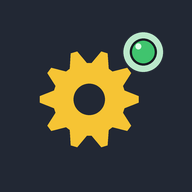

Démarrage de Python dans ton téléphone…
La première fois, il faut Internet (environ 10 Mo).
Ensuite, le jeu marche même sans connexion.
Les voyants s'allument en direct. Touche un nom pour l'ajouter à ton programme Python.
E.bp_marche | lire une entrée (True / False) |
S.moteur = True | commander une sortie |
M.etape = 2 | mémoire : garde sa valeur d'un cycle à l'autre (0 au départ) |
T.tempo("vert", condition, 6) | vrai quand la condition est vraie depuis 6 s |
T.front("bp", E.bp_marche) | vrai seulement au moment de l'appui |
T.temps | temps écoulé en secondes |
and / or / not | ET / OU / NON |
Le programme est exécuté toutes les 50 ms, comme un vrai automate : lire les entrées, calculer, écrire les sorties, et recommencer.
Chaque barreau est lu de gauche à droite, de haut en bas, à chaque cycle.
| | : laisse passer le courant si le signal est vrai.|/| : laisse passer le courant si le signal est faux (bouton d'arrêt).( ) : la cible prend la valeur du courant. (S) la met à 1 et elle y reste, (R) la remet à 0.T.nom devient vraie quand le courant passe depuis la durée choisie.M.m1, M.marche… (tape un nouveau nom pour en créer une).E.bp_marche ET NON E.bp_arret, E.a OU E.b, X2 (l'étape 2 est active). Vide = toujours vraie.